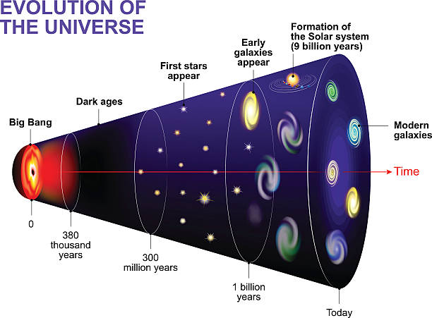

¿Que es?
LLamamos universo a todo aquella entidad fisica que se creo luego del big bang, es decir el universo es un todo conformado por al menos 3 dimensiones de espacio (ancho,altura y profundidad) y una de tiempo, en ese todo entran las estrellas, super novas, exoplanetas, sistemas, meteoritos e incluso nosotros mismos somos parte del universo.

¿Que es el big bang?
El big bang es la teoria mas aceptada sobre la creacion del universo. Esta teoria habla de como se forma la materia, el espacio y el tiempo mediante una gran explosion provocada hace 13.800 millones años, se toma esa fecha como el nacimiento del universo, mientras se enfriaba el universo se fueron generando particulas suba-atomicas, atomos, los cuales se unieron para crear estrellas, galaxias, meteoritos,etc.
Curiosidades
-Debido a la gravedad el tiempo se dilata en regiones con una gran masa
-Los quásares son núcleos galácticos activos, alimentados por agujeros negros supermasivos.
-Lo que actualmente conocemos como universo observables en realidad es luz que viajo por muchos km, incluso miles de millones de km, es decir estamos viendo el pasado del universo observable
-El universo esta en constante expansion debido al big bang, es decir indirectamente nuestra galaxia se aleja de las otras generando vacios identificados como materia oscura